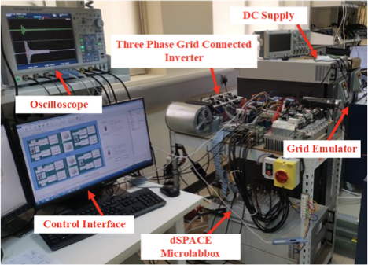

IEEE TPEL Project
Virtual oscillator PLL for distorted and weak-grid synchronization
This project focused on redesigning the PLL layer of a three-phase grid-connected inverter so that synchronization remains fast and reliable under harmonics, weak-grid conditions, phase jumps, and voltage disturbances. I developed a VO-PLL using an Andronov-Hopf oscillator and validated it in real-time closed-loop experiments.

Why this synchronization problem mattered
Conventional SRF-PLLs are widely used in grid-connected inverters, but their behavior becomes problematic in distorted grids. If the bandwidth is reduced, disturbance rejection improves but the PLL becomes too slow. If the bandwidth is increased or additional filtering is introduced, the steady-state phase error improves, but stability margin and transient speed become less attractive.
In weak and harmonic-rich grids, this tradeoff directly affects the converter's ability to inject current safely and accurately. The objective of this project was therefore not just to track the grid angle, but to redesign the synchronization mechanism so that it stays fast, robust, and experimentally usable in closed-loop converter control.
How I changed the PLL structure
The key design decision was to replace the conventional PI controller and resettable-integrator chain of a standard SRF-PLL with a proportional stage and a Hopf oscillator. The oscillator generates the orthogonal internal states and phase angle used for feedback, while its nonlinear limit-cycle dynamics provide self-sustained oscillation, harmonic selectivity, and an internal integral effect.
- Grid voltage is transformed into dq quantities and the phase error is formed from the q-axis component.
- The frequency-estimation loop uses the sampled phase-error information together with a feedforward frequency term.
- The estimated frequency and voltage magnitude are injected into the Hopf oscillator dynamics.
- The oscillator outputs the synchronized orthogonal signals and phase angle used to close the loop.
Why this solved the conventional tradeoff
The oscillator offers strong fundamental-frequency preference and harmonic attenuation without relying on multiple filtering layers. In my analysis, this allowed the proposed structure to behave like a higher-order disturbance-resistant PLL while retaining much faster dynamics than the type-III alternatives used for comparison.
- The describing-function analysis showed clear prioritization of the fundamental component over the 5th, 7th, and 11th harmonics.
- The real-time design only needed two main parameters, the Hopf gain and proportional gain, which I linked to desired settling time.
- This made the method much easier to tune than a more layered filtering-based PLL.
Experimental Platform
How I validated the design
The method was not kept at the simulation level. It was implemented and tested on a real grid-connected inverter platform.

Validation setup details
- Used a 20 kW two-level grid-connected inverter with dSPACE MicroLabBox for controller implementation.
- Used a Cinergia grid emulator to inject distorted-grid conditions with 5th, 7th, and 11th harmonics.
- Captured waveforms on a Yokogawa oscilloscope and compared directly against type-II and type-III SRF-PLL implementations.
- Ran both open disturbance tests and closed-loop dq current-control tests with active-power injection.
Problems and Solutions
What disturbances I designed the VO-PLL to handle
Phase jump and transient overshoot
A 10° phase jump was used to test transient speed. Conventional PLLs showed noticeably larger overshoot and slower settling, which is exactly the kind of behavior that becomes troublesome during grid disturbances and reconnection events.
- VO-PLL peak phase error: about 2.5°
- Type-II SRF-PLL: about 12.2° overshoot
- Type-III SRF-PLL: about 10° overshoot
- VO-PLL settling time: about 5 ms, faster than both references
Frequency ramp tracking
A 50 Hz to 60 Hz ramp at 5 Hz/s was used to test frequency adaptivity. The design goal here was to keep the phase error almost negligible while the grid frequency changed continuously.
- Type-II PLL showed about 11.5° steady-state phase error during the ramp.
- Type-III PLL reduced this to about 2°.
- VO-PLL reduced the ramp error further to about 0.2°.
Sequence reversal, sag, and weak-grid operation
The design was also tested against phase-sequence reversal, single-phase sag, and closed-loop current injection with added line impedance. These tests matter because they move the problem from idealized synchronization into realistic converter operation.
- VO-PLL sequence-reversal test error stayed around 0.1°, while the type-II structure reached about 21°.
- During single-phase sag, the VO-PLL kept the phase error around 0.3°, below the compared PLLs.
- In closed-loop operation, the method maintained synchronization under both strong and weak grid conditions.
What this work shows about how I approach converter control
This project shows how I work from a control problem all the way to experimental proof. I did not stop at proposing a new oscillator-based idea. I also turned it into a practically implementable discrete-time synchronization block, tuned it from transient-response targets, built the comparison framework, and validated it in closed-loop converter operation.
It is also a good representation of how I connect power electronics and power systems: the work begins with a converter-level PLL problem, but the real objective is stable and reliable operation in the converter-dominated grids that future power systems increasingly depend on.